The goal of this blogpost is to provide an intuitive definition of Jacobi fields,
a concept from differential geometry, and explain their usefulness for machine learning on curved manifolds.
In a nutshell, they are particularly relevant if you are trying to determine a relation between
the difference of two vectors $v_1$ and $v_2$ in a tangent space $T_p\mathcal{M}$ to a manifold
(or a power of it), and the geodesic distance between end-points of geodesics with those vectors
as initial velocities.
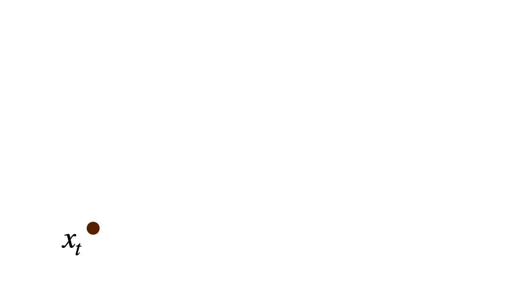
The content of this blogpost is based on our paper
Riemannian Variational Flow Matching for Material and Protein Design [1],
where we use this concept to relate our objective function (geodesic distance between endpoints)
to the objective of Riemannian Flow Matching [2]. We refer to our model as RG-VFM (Riemannian Gaussian - Variational Flow Matching) and to Riemannian Flow Matching as RFM. We recommend checking out
our paper
for more detailed explorations and proofs, and our code for playing around with these concepts.
My hope is that, by providing an accessible introduction to Jacobi fields and their applications
through this blogpost, their usefulness will find more applications in future works involving
vectors and points on curved manifolds. This post will answer the following questions:
Let's start from the basics, with some intuitive definitions of objects in differential geometry.
A. Basic Definitions in Differential Geometry
Riemannian manifold $\mathcal{M}$
A smooth mathematical space that looks flat up close but can be curved globally,
equipped with a specific tool $g$ called a Riemannian metric that allows
you to measure distances and angles everywhere on it.
Geodesic $\gamma(\tau)$
A generalization of a straight line to a curved space, representing the locally
shortest, unaccelerated path between two points on a manifold.
Exponential map $\exp_x(v)$
Takes a tangent vector $v$ at a base point $x$ on a manifold and maps it to the
point $y$ reached by traveling along the geodesic starting from $x$ with initial
velocity $v$.
Logarithmic map $\log_x(y)$
The local inverse of the exponential map: takes a target point $y$ on the manifold
and returns the specific tangent vector $v$ at base point $x$ needed to reach $y$
via a geodesic.
In the following, we will always assume we are working with simple manifolds, i.e. with closed-form
geodesics (geodesics that can be parametrized through the exponential map) and such that the
geodesic distance between two points can always be expressed through the norm of the logarithmic
map between them. A geodesic can thus be parametrized through the exponential map as $\gamma(\tau) := \exp_x(\tau \cdot v)$.
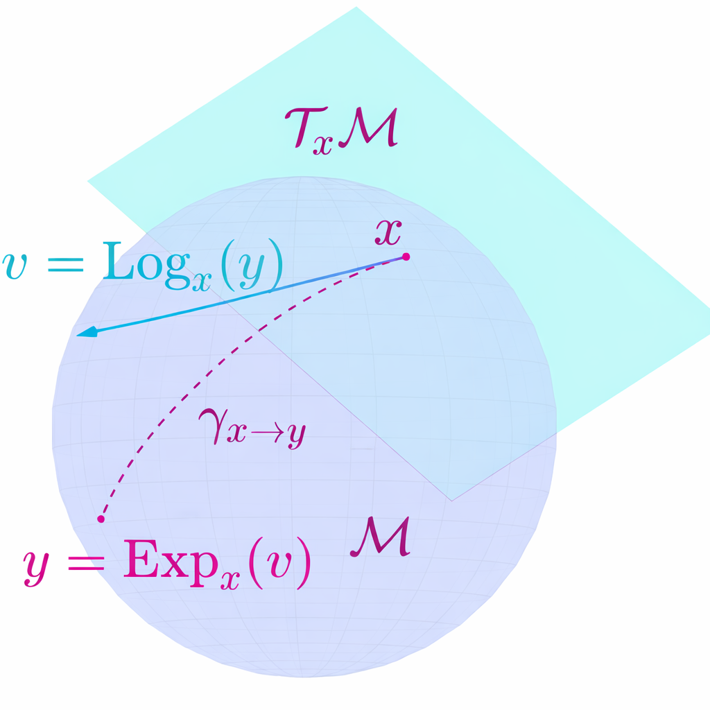
The exponential map on a manifold: a tangent vector $v$ at $x$ is mapped to the point
reached by following the geodesic with initial velocity $v$.
B. Jacobi Field Theory
Intuitively, the Jacobi field is a vector field along a geodesic $\gamma(\tau)$
on a Riemannian manifold $\mathcal{M}$ describing the variation between $\gamma(\tau)$ and other
"infinitesimally close geodesics."
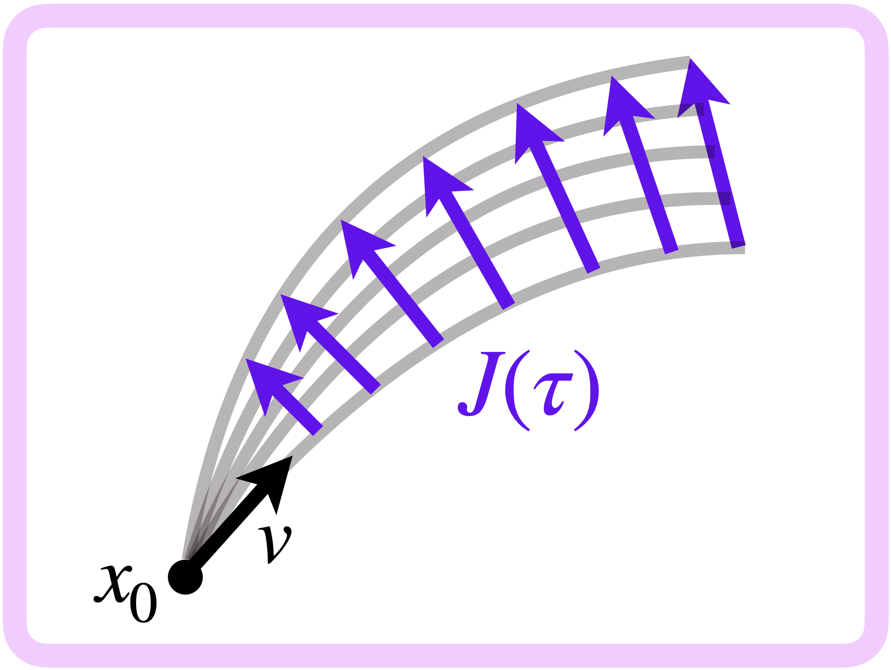
A Jacobi field $J(\tau)$ measuring the infinitesimal separation between neighboring geodesics.
In our setting, we consider a shooting family of geodesics
$\{\gamma_s\}$, all starting from the same point $\gamma_s(0) := x_0 \in \mathcal{M}$,
determined by an initial velocity of the form:
$$\dot{\gamma}_s(0) = v^s := v + s\, w, \quad v, w \in T_{x_0}\mathcal{M}$$
where $sw$ represents the perturbation level. This family of geodesics can be parametrized as:
with $s \in [0,1]$ and $\tau \in [0,1]$. The Jacobi field is defined at each
timestep $\tau \in [0,1]$ as the vector field obtained by differentiating with respect to the
parameter $s$ and evaluated at $s=0$. Intuitively, this corresponds to measuring the
perturbation of geodesics in the family with respect to the "reference geodesic"
at $s = 0$.
Let's go through the construction step by step:
We start building the shooting family of geodesics, fully determined by the
starting point and the initial velocities:
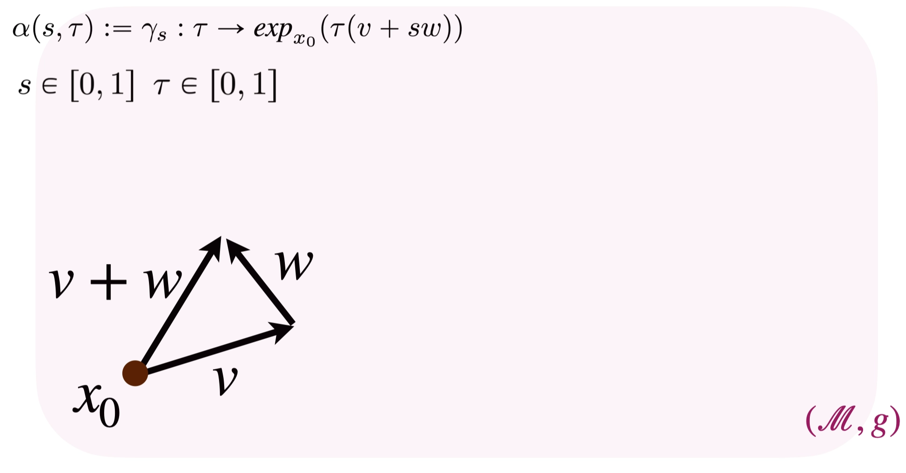
The time parameter $\tau$ traverses the geodesics from their common starting point $x_0$ at $\tau = 0$ to their endpoints at $\tau = 1$.
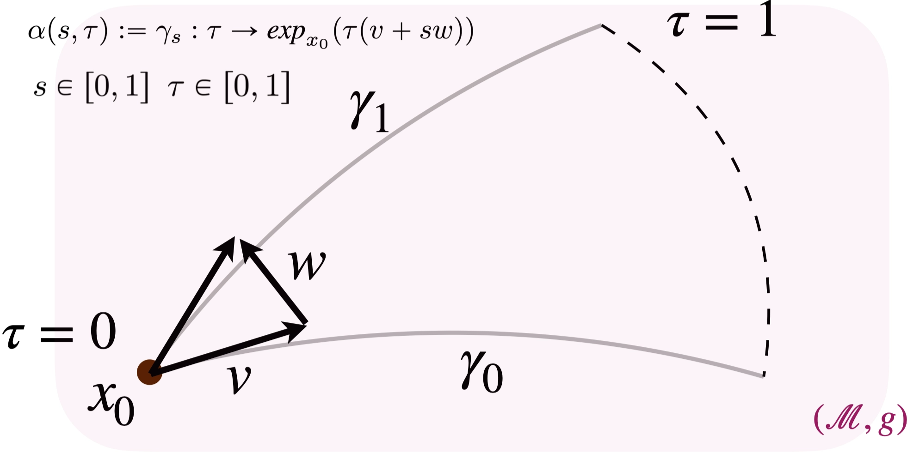
We can also visualize the effect of varying the parameter $s$, which translates to picking different geodesics in the family.
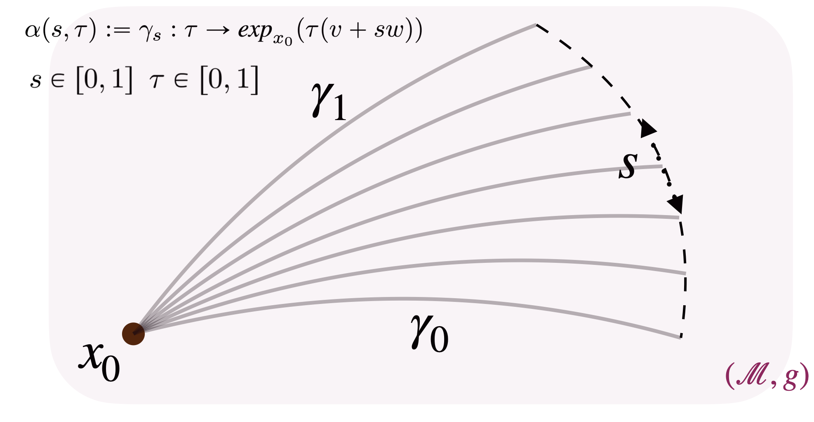
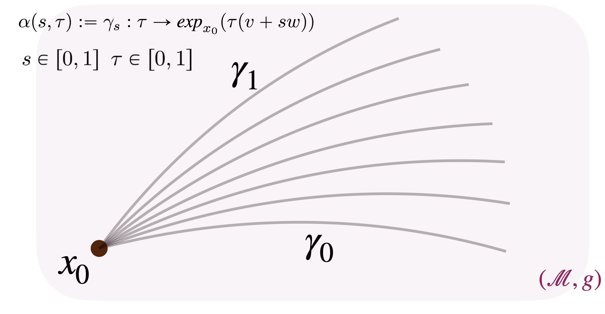
We can now derive the Jacobi field by differentiating such a family
with respect to $s$:
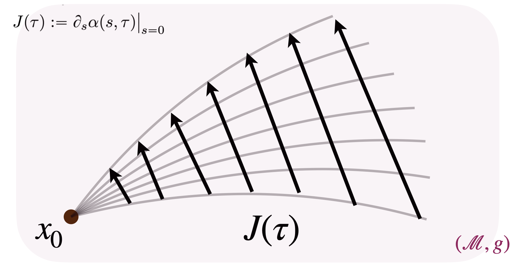
One key observation (proved in [1]) is that the norm of $J(1)$ equals the geodesic distance between the endpoints
of geodesics $\gamma_0$ and $\gamma_1$:
$J(1) = \log_{\gamma_0(1)}\!\bigl(\gamma_1(1)\bigr)$,
hence $\|J(1)\| = g\bigl(\gamma_0(1),\, \gamma_1(1)\bigr)$.
This property will be exploited in the following, by interchangeably
considering $\|J(1)\|$ and $g\bigl(\gamma_0(1),\, \gamma_1(1)\bigr)$.
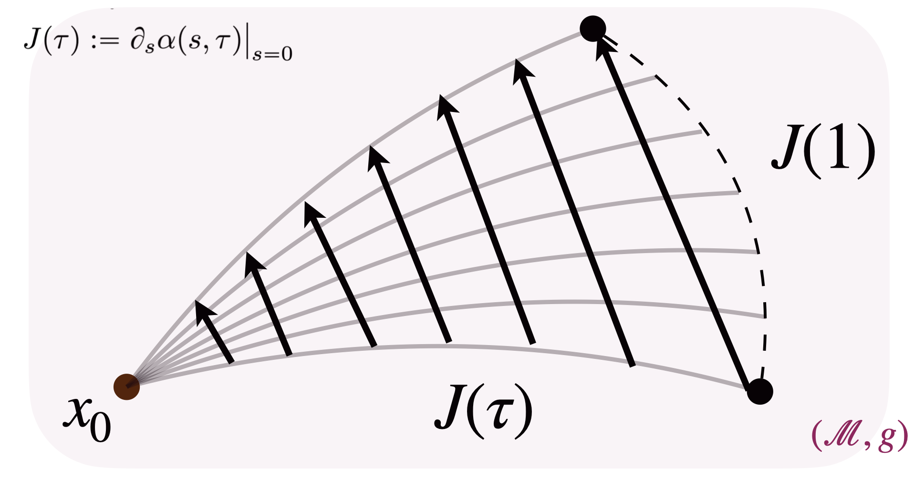
At this point, we can also introduce in the picture the initial time derivative of the vector field $J(0)$ at $\tau = 0$, and we observe that, by definition and straightforward derivations, $J'(0) = w$.
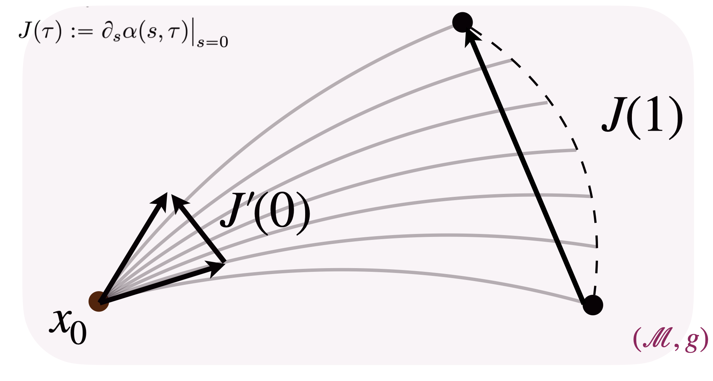
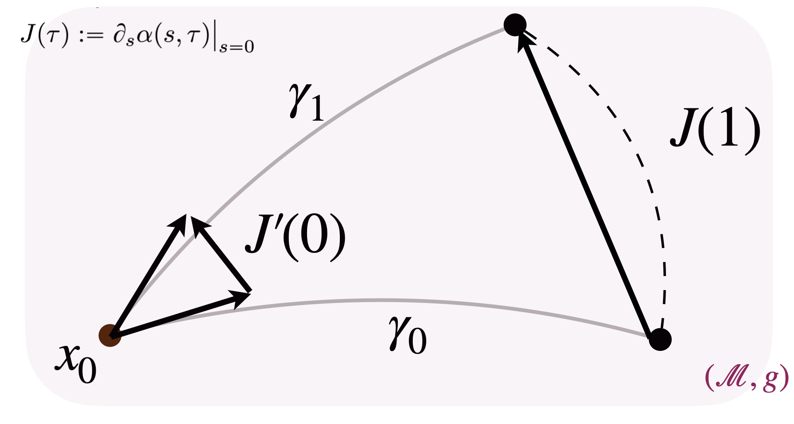
The relation between $J'(0)$ (the initial derivative of the Jacobi field) and $J(1)$
(its value at the endpoint) is the central object of interest. In flat Euclidean space
these are trivially related, because all tangent spaces coincide and geodesics are
straight lines. On a curved manifold, however, they differ — making it difficult to
establish an explicit analytical relationship between them.
2. Approximation Result and Applications to Machine Learning
The central result that makes Jacobi fields interesting for machine learning is the relation
between $J'(0)$ and $J(1)$, expressed by the following proposition:
Proposition 1 (Approximation result) · [1]
$J'(0)$ is a linear approximation of $J(1)$.
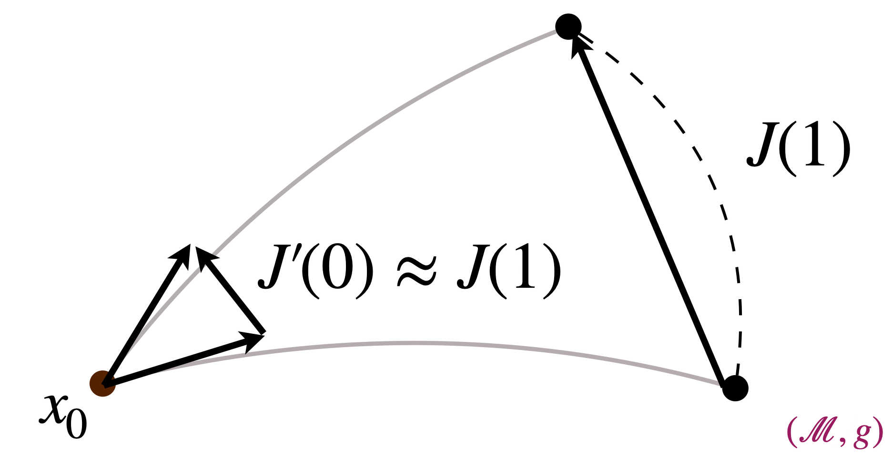
$J'(0)$ approximates $J(1)$ up to higher-order curvature terms.
The full proof of the Proposition is in [1]; intuitively it consists of:
Computing the Taylor expansion of $J(\tau)$ centred at $\tau = 0$ and evaluated at $\tau = 1$.
Identifying $J'(0)$ as the linear term of such expansion.
A natural question you may still have in mind is: but why? Why would these notions be useful in practice? Let's explore a practical example.
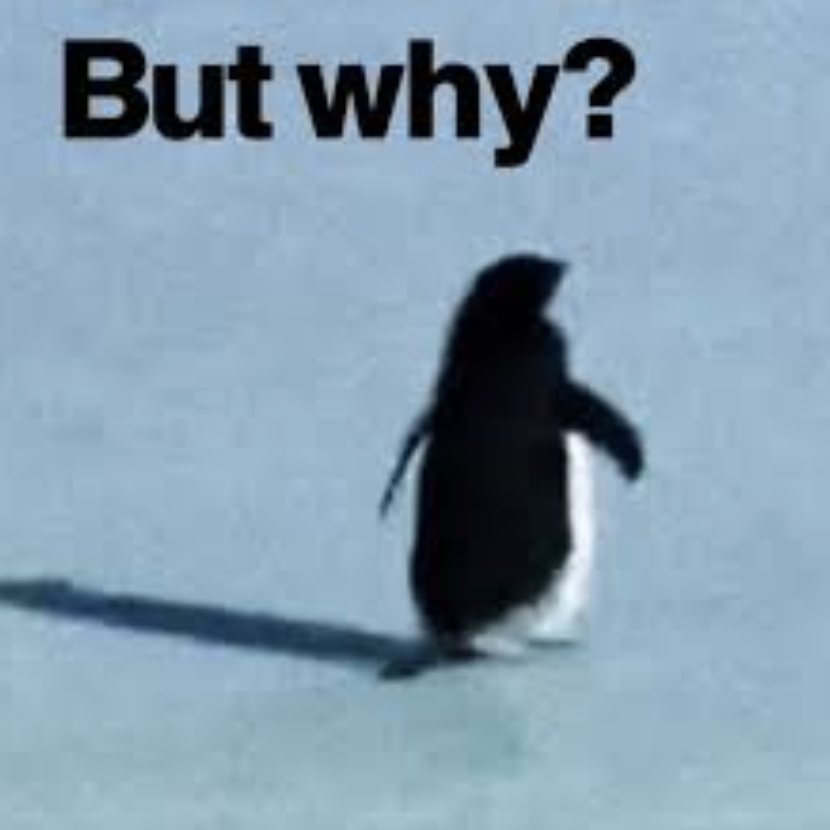
In machine learning applications, MSE losses often involve minimizing the distance between
two vectors or two points. In Euclidean space there is no conceptual difference between
the two, because the space is flat, geodesics are straight lines, and the tangent space
is the same at every point. Denoting the Euclidean distance by $d_e$:
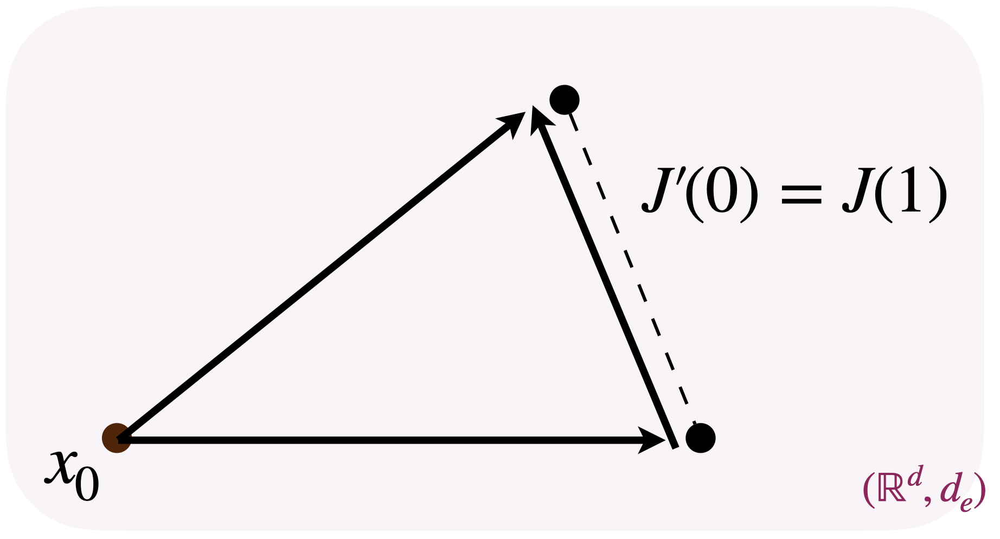
In Euclidean space, minimizing the distance between vectors is equivalent to
minimizing the distance between the corresponding endpoints.
This equivalence breaks down on curved manifolds.
For people familiar with flow matching-based models, this property is what allows one to
freely switch between predicting velocities and predicting endpoints when learning a
Flow Matching model, since the latter may offer practical advantages without any
analytical differences in flat space.
The issue arises on curved spaces: with non-zero curvature, the trivial
equivalence between minimizing vector differences and endpoint distances no longer holds.
This is precisely where our Proposition comes in: although there is no equivalence, we
at least have an analytical understanding of their relation.
In practice, applying the approximation result to a machine learning setting involves two steps:
Matching: Identify how the machine learning objects correspond to
the Jacobi field elements.
Derivation: Derive an explicit analytic connection between the
machine learning objects, exploiting the Approximation result from step 1.
We illustrate this procedure with the example of our own work in the next section.
3. Example: Comparing RG-VFM and RFM Losses
In this section we carry out the Matching and Derivation in the specific setting of our
paper [1]. We are interested in exploring the connection between our objective
$\mathcal{L}_{\mathrm{RG\text{-}VFM}}$ and the Riemannian Flow Matching objective [2]
$\mathcal{L}_{\mathrm{RFM}}$.
The key conceptual difference between the two losses is that RFM minimizes
the squared distance between two tangent velocities at a point on the manifold, while
RG-VFM minimizes the squared geodesic distance between two points on the
manifold — the endpoints of two geodesics that have such vectors as initial velocities.
With this intuition, you may already see how the Jacobi field perspective comes into play.
Concretely, we proved the following Matching result:
Proposition 2 (Matching result) · [1]
Under a specific definition of a Jacobi field for a shooting family of geodesics,
the following equalities hold for the RFM and RG-VFM losses:
Once the connection is drawn, the last step is to exploit Proposition 1 to relate
the two losses. The difference between the loss values and the Jacobi field quantities
$J(1)$ and $J'(0)$ involves taking the squared norm, which affects the Derivation:
Proposition 3 (Final Derivation) · [1]
Under a specific definition of a Jacobi field for a shooting family of geodesics,
the difference between $\mathcal{L}_{\mathrm{RG\text{-}VFM}}$ and
$\mathcal{L}_{\mathrm{RFM}}$ encodes the manifold curvature through:
Schematization of how the RG-VFM and RFM losses fall into the Jacobi fields perspective.
The curvature functional $\mathcal{C}$ captures how the manifold's geometry affects the
loss comparison, encoding first- and second-order effects of curvature on geodesic deviation. Thus, RG-VFM implicitly captures the
full geometric structure through the exact Jacobi field $J(1)$, while RFM uses only the
linear approximation $J'(0)$.
In summary, we introduced RG-VFM as an alternative to RFM for learning a velocity field
on a manifold, providing a variational formulation whose objective fully captures
higher-order curvature effects, unlike RFM. This results in generally different objectives
on curved manifolds. In Euclidean space, however, the RFM objective reduces to CFM [3],
while RG-VFM reduces to VFM [4] — and these two become equivalent under appropriate
normalization.
4. Future Applications
In conclusion, we believe that the Approximation result could be useful in practice to
analytically relate quantities that are trivially connected in Euclidean space but whose
relationship would otherwise be obscure on curved manifolds. This could be done by
properly adapting the Matching and Derivation procedure to different settings of interest,
and we hope that this short introduction makes these concepts accessible and inspires
further applications in machine learning.
References
Zaghen, Olga, et al. "Riemannian Variational Flow Matching for Material and Protein Design."
arXiv preprint arXiv:2502.12981 (2025).
Chen, Ricky TQ, and Yaron Lipman. "Flow Matching on General Geometries."
arXiv preprint arXiv:2302.03660 (2023).
Lipman, Yaron, et al. "Flow Matching for Generative Modeling."
arXiv preprint arXiv:2210.02747 (2022).
Eijkelboom, Floor, et al. "Variational Flow Matching for Graph Generation."
Advances in Neural Information Processing Systems 37 (2024): 11735–11764.
Citation
If you found this blogpost and/or our work useful for your research, please consider citing us! :)
BibTeX
@article{zaghen2025riemannian,
title = {Riemannian Variational Flow Matching for Material and Protein Design},
author = {Zaghen, Olga and others},
journal = {arXiv preprint arXiv:2502.12981},
year = {2025}
}